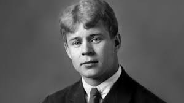
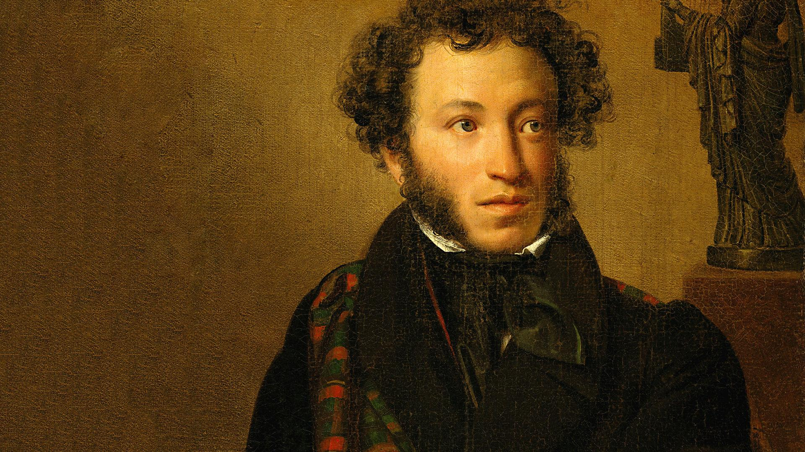
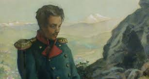
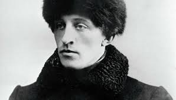
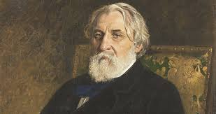
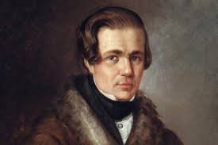
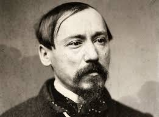
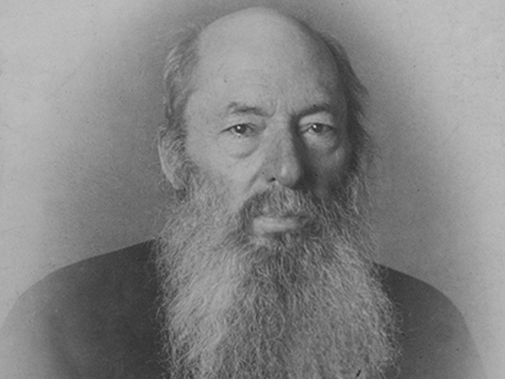
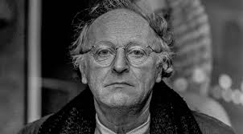
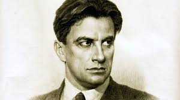

1) С.А. Есенин
Сергей Есенин не сразу нашел свое литературное кредо: он бросался из одного направления в другое. Сначала выступал в лаптях и рубахе с новокрестьянскими поэтами, затем, облачившись в пиджак и галстук, создавал с имажинистами новую литературу. В конце концов он отказался от всех школ и стал свободным художником, заявив: «Я не крестьянский поэт и не имажинист, я просто поэт».

Вернуться на главную
2) А.С. Пушкин
Александр Пушкин начал писать свои первые произведения уже в семь лет. В годы учебы в Лицее он прославился, когда прочитал свое стихотворение Гавриилу Державину. Пушкин первым из русских писателей начал зарабатывать литературным трудом. Он создавал не только лирические стихи, но и сказки, историческую прозу и произведения в поддержку революционеров — за вольнодумство поэта даже отправляли в ссылки.

Вернуться на главную
3) М.Ю. Лермонтов
Михаил Лермонтов — один из самых известных русских поэтов, и признание к нему пришло еще при жизни. Его творчество, в котором сочетались острые социальные темы с философскими мотивами и личными переживаниями, оказало огромное влияние на поэтов и писателей XIX–XX веков. «Культура.РФ» рассказывает о личности, жизни и творчестве Михаила Лермонтова.

Вернуться на главную
4) А.А. Блок
Александр Блок написал свои первые стихи еще до гимназии. В 14 лет он издавал рукописный журнал «Вестник», в 17 — ставил пьесы на сцене домашнего театра и играл в них, в 22 — опубликовал свои стихотворения в альманахе Валерия Брюсова «Северные цветы». Создатель поэтичного и таинственного образа Прекрасной Дамы, автор критических статей, Блок стал одним из самых известных поэтов Серебряного века.

Вернуться на главную
5) И.С. Тургенев
Иван Тургенев был одним из самых значимых русских писателей XIX века. Созданная им художественная система изменила поэтику романа как в России, так и за рубежом. Его произведения восхваляли и жестко критиковали, а Тургенев всю жизнь искал в них путь, который привел бы Россию к благополучию и процветанию.

Вернуться на главную
6) А.В. Кольцов
Кольцов Алексей Васильевич, русский поэт. Родился в зажиточной семье скототорговца. Отец, человек крутого нрава, с детских лет определил сыну торговое поприще. Грамоту Кольцов постигал на дому, в уездном училище не проучился и двух лет, но страсть к чтению проявилась в нем очень рано. В 16 лет, пережив глубокое потрясение от книги И. И. Дмитриева, начинает сам писать стихи. К н. 1830-х становится известным в культурном кругу Воронежа “стихотворцем-мещанином”, пишет стихи, предвестники будущих “дум” — “Великая пойма”, “Божий мир”, “Молитва” .

Вернуться на главную
7) Н.А. Некрасов
Николай Некрасов известен современным читателям как «самый крестьянский» поэт России: именно он одним из первых заговорил о трагедии крепостничества и исследовал духовный мир русского крестьянства. Также Николай Некрасов был успешным публицистом и издателем: его «Современник» стал легендарным журналом своего времени.

Вернуться на главную
8) А.А. Фет
Однажды на вопрос анкеты дочери Льва Толстого Татьяны «Долго ли бы вы хотели жить?» Фет ответил: «Наименее долго». И всё же у писателя была длинная и очень насыщенная жизнь — он не только писал множество лирических произведений, критические статьи и мемуары, но и посвятил целые годы сельскому хозяйству, а яблочную пастилу из его имения поставляли даже к императорскому столу.

Вернуться на главную
9) И.А. Бродский
«Какую биографию, однако, делают нашему рыжему!» — невесело пошутила Анна Ахматова в разгар судебного процесса над Иосифом Бродским. Кроме громкого суда противоречивая судьба уготовила поэту ссылку на Север и Нобелевскую премию, неполные восемь классов образования и карьеру университетского профессора, 24 года вне родной языковой среды и открытие новых возможностей русского языка.

Вернуться на главную
10) В.В. Маяковский
Владимир Маяковский не сразу начал писать стихи — сначала он собирался стать художником и даже учился живописи. Слава поэта пришла к нему после знакомства с авангардистами, когда первые произведения молодого автора с восторгом встретил Давид Бурлюк. Футуристическая группа, «Сегодняшний лубок», «Левый фронт искусств», рекламные «Окна РОСТА» — Владимир Маяковский работал во множестве творческих объединений. А еще писал в газеты, выпускал журнал, снимал фильмы, создавал пьесы и ставил по ним спектакли.

Вернуться на главную